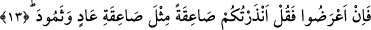
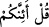

ederse, Allah da onun yetmiş dünyalık, otuz âhiretlik ihtiyâcını giderir. Sonra Allah
bununla ilgili bir melek görevlendirir ve onu -birbirinize hediye iletmeniz gibi-
kabrime sokar; melek bana salât ü selâm eden herkesi adıyla nesebiyle aşîretine
varıncaya kadar bildirir ve ben bu bilgileri nezdimdeki bembeyaz sayfaya
kaydederim. Çünkü benim öldükten sonraki ilmim tıpkı hayattaki ilmim gibidir.”
Cuma günü Hz. Muhammed’e salât ü selâm getirmek
Diğer günlerde getirmekten daha kıymetlidir.
Sadece Hz. Nebî’ye mahsus olması sebebiyle,
Bu salât ü selâmın sevâbı başka bir şeyle kıyaslanamaz.”
Evet, gece ile gündüz öyle iki hazînedir ki bu ikisine ne koyarsan onu mutlaka sana
öder; onlar senin için çalıştıkları gibi sen de onların içinde amel et.
Allah cümlemizi vakitlerin değerlerini bilenlerden eylesin!
13. Eğer onlar yüz çevirirlerse de ki: İşte sizi Âd ve Semûd’un başına gelen
kasırgaya benzer bir kasırgaya karşı uyarıyorum!
“Eğer onlar yüz çevirirlerse…”
Bu ifâde, 9. âyetteki () cümlesine bağlı olup mânâsı şöyledir: Şâyet Kureyş
kâfirleri, ulvî ve süflî cisimler ile ikisi arasındaki bütün varlıkların yaratılışına dâir
bunca açıklamadan sonra, hâla îmandan yüz çevirir iseler, onlara “de ki: “İşte sizi Âd
ve Semûd’un başına gelen kasırgaya…” -ki Âd kavminin azâbı dondurucu bir kasırga,
Semûd kavminin azâbı ise Cebrâil (a.s.)’ın korkunç sayhası idi- “benzer” bir azâba;
yani yıldırım gibi tek bir çarpışta helâk eden sert “bir kasırgaya karşı…”
“Sà’ika”nın kök anlamı ”gökten inip çarptığı şeyi yakan ateş parçası” demektir.
Âyette, -sertlik ve korkunçluk alâkasıyla- istiâre olarak sert ve korkunç azap mânâsında
kullanılmıştır. el-Müfredât’a göre Sà’ika gök boşluğundan gelen şiddetli bir sestir, ki
içinde sadece ateş olabileceği gibi azap veya ölüm de olabilir. Sà’ika haddizâtında tek
bir şey olup bu özellikler onun etkileridir. Yine Sâika; insanı kendinden geçiren ve
helâk eden bir azap, tıpkı Âd kavminin azâbının şiddetli fırtına, Semûd kavminin
azâbının ise Cebrâil (a.s)’ın nârâsı ile gerçekleşmesi gibi bir azaptır.
“…Uyarıyorum!” Mânâ muzarî olmasına rağmen mazi sıygası kullanılması, uyarılan
husûsun mutlaka gerçekleşeceğini haber veren uyarının gerçekleşmiş olduğunu
göstermek içindir.
Bu uyarıya kulak tıkarsanız, Allah’tan, O’nu ve rızasını aramaktan şiddetle imtinâ